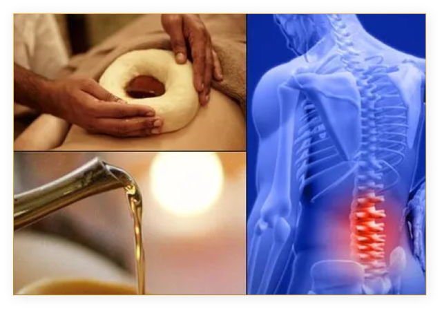

Prishtavasthy is a specialized Ayurvedic treatment in which warm medicated oil is retained inside a medicated paste boundary over the upper back area.
Prishtavasthy proves beneficial in relieving musculoskeletal pain and inflammation, strengthening intervertebral disc spaces, and improving the range of movements of the spine. Prishtavasthy helps relieve muscular spasms and strengthen the back muscles and connective tissues.
The Quality of the skin is supported by an extensive network of blood vessels, and sensory receptors that monitor touch, pressure, temperature and pain Our body is made up of different types of cells and each cell membrane is made up of Phospholipids, lipid soluble substances can easily cross the cell membrane because of this the base of the medicine which we use is in lipid form (medicated oils).
When the procedure starts, medicated oil cross the cell membrane through the skin, and the functions of phospholipids will increase and act as a carrier for various cellular elements or impurities which are responsible for the formation of diseases.
In Pristha vasti continuous warm oil application over the whole spine area for a period of 30 to 4o min increases the blood flow over the back region and helps to get the good nutrition and pain relieving bio-chemicals of the affected area. It also helps to reduce local toxins, waste materials and pain producing bio-chemicals from the affected area.
It helps to restore local damage to the ligaments, tendons, surrounding muscles and intra-vertebral discs.
This therapy produces sedative effect because of the pharmacological action of the used medicine like Anti-inflammatory action, Analgesic action, muscle relaxant etc. and acts as a counter irritant which is the thermal stimulus and may affect the pain sensation.